방송통신기사 (2003-08-10 기출문제)
1과목: 디지털 전자회로
1. 디지털 클럭 발진회로에서 출력에 tHigh = 4[㎲]이고, tlow = 6[㎲]인 구형파를 얻었을 때 듀티 사이클은?
- 20 %
- 40 %
- 60 %
- 80 %
(정답률: 알수없음)

2. 다음 TR의 접속방식 중 틀린 것은?
- 전압,전류이득이 모두 1보다 큰것은 CE접속방식이다.
- CB접속방식은 전압이득이 거의 1이다.
- CC접속방식은 입력저항이 크고 출력저항이 작다.
- CB접속방식은 입력저항이 작고 출력저항이 크다.
(정답률: 알수없음)
3. 35 Bit의 두 2진수를 병렬가산하기 위해서는 최소한 몇개의 반가산기와 전가산기가 필요한가?
- 반가산기: 1개, 전가산기: 34개
- 반가산기: 2개, 전가산기: 33개
- 전가산기: 1개, 반가산기: 34개
- 전가산기: 2개, 반가산기: 33개
(정답률: 알수없음)
4. 그림의 복수 에미터 트랜지스터가 이루는 논리게이트는?
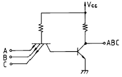
- TTL
- DTL
- DCTL
- RTL
(정답률: 알수없음)
5. 이상적인 연산증폭기의 조건으로서 옳지 않은 것은?
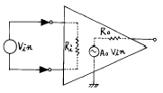
- 전압증폭도가 무한대
- 입력 임피이던스가 무한대
- 출력 임피이던스가 무한대
- 주파수 대역폭이 무한대
(정답률: 알수없음)
6. 다음 OP Amp 회로의 전압증폭도 Av 값은?
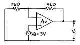
- 2.5
- 3.5
- 1.4
- 10.5
(정답률: 알수없음)
7. 차동 증폭기의 동상제거비(common mode rejection ratio)의 설명 중 틀린 것은?
- 동상입력의 이득에 대한 이상입력의 이득의 비를 말한다.
- 이 값이 클수록 차동 증폭기의 성능이 좋다.
- 차동 증폭기의 동상 입력에 대한 오차를 알수 있는 매개수가 된다.
- 회로의 안정도면에서는 이 값이 작을수록 유리하다.
(정답률: 알수없음)
8. 그림과 같은 직선 검파회로에서 diagonal clipping이 생기는 이유로서 옳은 것은? (단, ma는 변조지수, Ws는 변조신호의 각주파수)
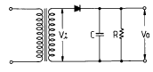
- 시정수 RC가 너무 작기 때문
- 시정수 RC가 너무 크기 때문
- RC > 1/(ma· Ws)
- RC ≫ 1/(ma· Ws)
(정답률: 알수없음)
9. 포스터 실리(Foster-Seeley)회로의 사용 목적은?
- AM 복조
- FM 변조
- AM 변조
- FM 복조
(정답률: 알수없음)
10. 그림과 같은 슬라이스(slice) 회로의 출력파형은? (단, 입력은E sin ωt[V]이다.)
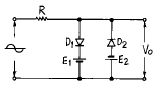
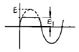
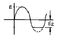
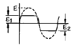
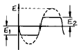
(정답률: 알수없음)
11. 논리식
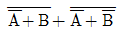
을 간단히 하면?- A
- B
- AB
- A+B
(정답률: 알수없음)
12. 그림의 논리회로를 간소화 하였을 때 출력 X는?
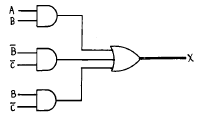
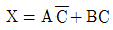
- X = A+B
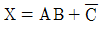
- X = AB
(정답률: 알수없음)
13. 변환하고자 하는 입력전압은 0[V]에서 15[V]일 때, 몇 BIT의 A/D변환기를 사용해야하는 것이 가장 좋은가? (단, 분해능은 3.66[mV] 이다.)
- 10 BIT
- 12 BIT
- 14 BIT
- 16 BIT
(정답률: 알수없음)
14. Exclusive-OR 게이트의 입력 A,B,C에 대한 출력 진리값 중 틀린 것은? (단, F = A ⊕ B ⊕ C )
- 0 = 0 ⊕ 0 ⊕ 0
- 1 = 0 ⊕ 0 ⊕ 1
- 1 = 0 ⊕ 1 ⊕ 1
- 1 = 1 ⊕ 1 ⊕ 1
(정답률: 알수없음)
15. 그림의 정전압회로에서 V가 25∼28[V]의 범위에서 변동한다. zener diode 전류ID의 변화는? (단, RL=1[kΩ ], V=28[V], VL=20[V]이다.)
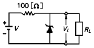
- 30∼50[mA]
- 30∼60[mA]
- 10∼50[mA]
- 10∼60[mA]
(정답률: 알수없음)
16. 그림과 같은 발진회로의 발진 주파수는?
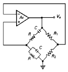
- 1/2πR1C
- 1/2π√RC
- 1/2πR1R2C
- 1/2πRC
(정답률: 알수없음)
17. 아날로그-디지탈 변환에 유효하게 사용되는 코드는?
- BCD 코드
- 3초과 코드
- 그레이 코드
- 링 카운터 코드
(정답률: 알수없음)
18. 10진수의 4에 해당하는 4비트 그레이 코드(gray code)는 다음 중 어느 것인가?
- 0100
- 0111
- 1000
- 0110
(정답률: 알수없음)
19. 증폭기의 전압이득이 증가할 때 대역폭은?
- 영향을 받지 않는다.
- 증가한다.
- 감소한다.
- 일그러진다.
(정답률: 알수없음)
20. 주파수 변조에서 S/N 비를 개선하기 위한 방법으로 적당치 않은 것은?
- 신호파의 진폭을 크게 한다.
- 변조지수 mf를 크게 한다.
- 프리엠파시스를 사용한다.
- 주파수 대역폭을 크게 한다.
(정답률: 알수없음)
2과목: 방송통신 기기
21. 공중파 TV 방송에 가장 큰 잡음을 주는 것은?
- 태양 잡음
- 우주 잡음
- 공전
- 인공 잡음
(정답률: 알수없음)
22. 다음 기기 중 소리의 Dynamic Range에 변화를 주기 위해 사용되는 것은?
- equalizer
- compresser
- reverbrator
- flenger
(정답률: 알수없음)
23. TV 영상특성 측정시 미분 이득과 미분 위상을 측정할 때 사용하는 시험신호는?
- 컬러바 신호
- 윈도우 신호
- 색 신호로 변조된 계단파
- 멀티 버스트 신호
(정답률: 알수없음)
24. 다음 중 벡터스코프로 측정할 수 없는 것은?
- 색도 이득측정
- 색도진폭측정
- 색도 위상측정
- 화이트 바란스측정
(정답률: 알수없음)
25. 위성방송 지구국의 전송용으로 주로 사용하는 안테나는?
- Cassegrain 안테나
- Panel 안테나
- Ring 안테나
- Rhombic 안테나
(정답률: 알수없음)
26. 다음 중 디지털 전송방식은?
- PAM
- PCM
- PPM
- PWM
(정답률: 알수없음)
27. 스퓨리어스 발사에 해당되지 않는 것은?
- 기생발사
- 고조파 발사
- 상호변조에 의한 발사
- 반송파 발사
(정답률: 알수없음)
28. 일본에서 지난 60년대부터 연구를 시작하여, 아나로그방식의 하이비전이라는 HDTV 방송을 개발한 바 있으며, 일본의 방송위성(BS)을 통해서 실시하고 있는 고화질 방식은?
- MUSE
- WOWOW
- ISDB-T
- MAC
(정답률: 알수없음)
29. 다음 중 TV주사 방식이 아닌 것은?
- 수평주사
- 수직주사
- 비월주사
- 중간주사
(정답률: 알수없음)
30. 다음 중 각종 영상신호의 소스와 모니터에 사용하여 On air중임을 알려주는 방송시스템을 무엇이라 하는가?
- 타리시스템(Tally system)
- Border line generator
- 문자슈퍼장치
- 셀프 키
(정답률: 알수없음)
31. 다음 괄호안에 들어갈 적당한 단어는?
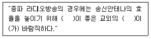
- 대지의 전도율, 평탄한 땅
- 대지의 전도율, 높은 고지
- 대지의 유전율, 평탄한 땅
- 대지의 유전율, 높은 고지
(정답률: 알수없음)
32. NTSC 방식의 최대 영상 주파수는 얼마인가?
- 6[㎒]
- 4.2[㎒]
- 5[㎒]
- 4.5[㎒]
(정답률: 알수없음)
33. 디지털TV 위성방송의 채널다중화 방식은?
- 부호 다중화방식
- 시분할 다중화방식
- 주파수분할 다중화방식
- 공간분할 다중화방식
(정답률: 알수없음)
34. 다음의 대표적인 저장매체에서 엑세스 시간(access time)면에서 가장 뒤지는 것은?
- RAM(Random Access Memory)
- HDD(Hard Disc Drive)
- MO-Drive(Magneto-Optical Disc Drive)
- MT(Magnetic Tape)
(정답률: 알수없음)
35. 다음 중 공중선 전력을 구분할 때 거리가 먼 것은?
- 평균전력
- 실효복사전력
- 첨두포락선전력
- 반송파전력
(정답률: 알수없음)
36. SNG(Satellite News Gathering) 사용시 현 위치의 좌표를 알기 위해 사용하는 기기는?
- EPS
- DPS
- GPS
- PPS
(정답률: 알수없음)
37. 전화망을 이용하여 일반 텔레비젼과 연결되어 있는 데이터베이스(DB)를 갖춘 센터에 이용자가 희망하는 정보화면을 요구하면 전화회선을 통하여 문자나 도형정보가 전송되어 이것이 화면에 나타나는 시스템은?
- 비디오 텍스(Videotex)
- VAN(Value Added Network)
- ISDN(Integrated Service Digital Network )
- RBDS(Radio Broadcast Data System)
(정답률: 알수없음)
38. 임피이던스가 25[Ω]인 반파장 안테나와 특성임피이던스가 100[Ω] 인 선로를 정합하기 위한 임피이던스는?
- 150[Ω]
- 250[Ω]
- 25[Ω]
- 50[Ω]
(정답률: 알수없음)
39. 멀티버스트 신호로 측정할 수 있는 비디오 특성은?
- 주파수 대 잡음
- 비직선 왜곡
- 주파수 대 진폭
- 군지연 특성
(정답률: 알수없음)
40. 동일한 출력이라고 가정할 때 방송구역에 가장 크게 영향을 미치는 것은?
- 안테나 케이블
- 안테나의 종류
- 송신기의 특성
- 안테나의 높이
(정답률: 알수없음)
3과목: 방송미디어 공학
41. 다음 중 전송주파수대를 반으로 줄이고 화질을 저하시키지 않는 방법의 주사방법은?
- progressive scanning
- interlaced scanning
- scanning
- picture element
(정답률: 알수없음)
42. 우리나라 HDTV에서 사용하고 있는 오디오 압축방식은?
- AC-3 방식
- Stereo 방식
- Surround 방식
- DCT 변환방식
(정답률: 알수없음)
43. 음향신호 디지털 과정에서 입력신호가 작고 양자화 스텝 사이에 존재한다면 양자화 과정에서 심각한 왜곡이 발생한다. 이런 왜곡을 제거하는 방법은?
- 에일리어싱(Aliasing)
- 디더(Dither)
- 오버 샘플링(Over Sampling)
- 노이즈 세이핑(Noise Shaping)
(정답률: 알수없음)
44. 표준방송이란 다음 중 어느 것을 말하는가?
- 중파방송(AM)으로서 526.5KHz~1606.5KHz 주파수 대역을 이용하는 방송을 말한다.
- 단파방송(SM) 3.9MHz~26.1MHz의 주파수 대역을 이용하는 방송을 말한다.
- 초단파 방송(FM) 88MHz~108MHz의 주파수 대역을 이용하는 방송을 말한다.
- 극초단파 방송(UHF) 300MHz~3000MHz의 주파수 대역을 이용하는 방송을 말한다.
(정답률: 알수없음)
45. 다음 중 일반적인 프로그램의 편성과 거리가 가장 먼 것은?
- 프로그램의 제작
- 프로그램의 평가
- 프로그램의 선택
- 프로그램의 배치
(정답률: 알수없음)
46. 다음 중 멀티미디어의 특징이 아닌 것은?
- 멀티미디어 시스템은 두개 이상의 미디어를 동시에 사용 할 수있다.
- 멀티미디어 시스템은 사용자와의 대화가 중요하지 않다.
- 사용자는 시스템을 통해 다양한 정보를 얻을 수 있어야 한다.
- 사용자는 시스템과 대화를 할 수 있어야 한다.
(정답률: 알수없음)
47. FM 방송 신호의 특징이 아닌 것은?
- 반송파의 포락선은 정보신호에 비례함
- FM 변조지수는 최대 주파수 편이와 정보신호 대역폭의 비로써 정의된다.
- FM 신호는 전압제어 발진기(VCO)를 사용하여 직접 발생할 수 있다.
- FM 신호는 변별기를 사용하여 간단하게 복조할 수 있다.
(정답률: 알수없음)
48. 다음 중 오디오믹서는 일반적으로 0(VU)를 몇 데시벨로 설정하고 있는가?
- 4dB
- 3dB
- 2dB
- 1dB
(정답률: 알수없음)
49. 고품위 텔레비전(HDTV)이라고 정의하는 조건 중 틀린 것은?
- 주사선은 1000개 이상
- 16:9의 화면비
- 500라인을 초과하는 수평해상도
- 기존 NTSC, PAL, SACAM방식과 비교해서 칼라해상도가 실질적으로 증가한 것
(정답률: 알수없음)
50. 다음 중 멀티미디어의 중요한 기술인 하이퍼미디어 기술을 사용하지 않은 것은?
- 인터넷
- 전자도서
- 화상회의
- 전자메뉴얼
(정답률: 알수없음)
51. 차세대 방송의 개념이 아닌 것은?
- 방송, 통신 및 컴퓨터의 융합
- 주문형 서비스 제공
- 프로그램 공급자(PP) 위주의 서비스
- 비실시간 수신가능
(정답률: 알수없음)
52. 뉴미디어계를 크게 세가지로 구분 할 수 있다. 신문. 우편. 잡지 등은 어느 미디어에 속하는가?
- 유선계 미디어
- 패키지 미디어
- 무선계 미디어
- 방송 미디어
(정답률: 알수없음)
53. VHF/UHF 대역 지상파 방송의 특성이 아닌 것은?
- TV와 FM 방송 용도로 사용
- 지형지물과 지표반사가 전송신호의 감쇠요인
- 무지향성 수신이 가능
- 주파수가 높을수록 광역방송에 적합
(정답률: 알수없음)
54. 다음 중 시각적으로 인접한 두화면간에 상관도가 높은 특징을 이용하여 매크로 블록(16*16)으로서 두화면간의 움직임을 추정하여 보상함으로써 중복성을 제거하는 방법은?
- Temporal Redundancy
- Statistical Redundancy
- Spatial Redundancy
- Specical Redundancy
(정답률: 알수없음)
55. 국내 지상파 아날로그 TV 방송에 관한 설명이다. 거리가 먼 것은?
- 비월주사방식으로 1 frame을 2회에 걸쳐 주사한다.
- 화면의 비율은 4:3 또는 16:9 이다.
- 음성의 변조방식은 FM변조를 한다.
- 채널당 주파수 대역폭은 6㎒이다.
(정답률: 알수없음)
56. 다음 중 Inter Carrier 방식의 특징이 아닌 것은?
- 휘도신호는 직류에서 4.2MHz 까지의 주파수 대역을 가지고 있으나, 신호의 에너지는 0~4.2MHz의 범위로 고르게 분포되어 있지않다.
- 휘도신호는 직류에서 수평주파수의 간격으로 수평주파수의 고조파가 존재하고 그 주위에 휘도신호의 에너지가 분포되어 있다.
- 휘도신호의 스펙트럼 분포 사이에는 빈틈이 있어 여기에 색신호을 삽입한다.
- 휘도신호의 반송파 주파수를 수평주파수의 1/2의 기수배로 선택하며 휘도신호의 에너지를 색신호 사이에 삽입한다.
(정답률: 알수없음)
57. 지상파 TV 방송 채널의 특성이 아닌 것은?
- 부가 백색 가우시안 잡음(AWGN)
- 임펄스 잡음
- 다중경로 전파전파(Rayleigh 채널, Rician 채널)
- 전리층 반사
(정답률: 알수없음)
58. 조명에서 색온도란?
- 조명 Lamp의 온도를 말한다.
- 광원의 세기 정도를 말한다.
- 색을 숫자화 혹은 R, G, B의 에너지 구성비를 말한다.
- 어떤 물체에 빛을 주었을 때 반사되는 양을 말한다.
(정답률: 알수없음)
59. 다음 중 화상정보 기능이 있는 PSTN, PSDN, 전용망 등을 이용하여 TV수상기에 연결한 후 각종 화상정보 등을 상호대화 형식으로 정보를 제공하는 쌍방향 정보시스템은?
- Teletext
- HDTV
- Videotex
- Facsimile
(정답률: 알수없음)
60. 다음 마이크로폰 지향특성 중 스튜디오 또는 야외에서 드라마의 수음에 가장 적당한 것은?
- omni-directional
- bi-directional
- cardioid
- super cardioid
(정답률: 알수없음)
4과목: 방송통신 시스템
61. 케이블 TV 유선방송의 전송망을 설계 및 설치시 거리가 먼 것은?
- 낙뢰에 대비한 설계를 고려한다.
- 장비의 유지보수 및 호환성을 고려한다.
- 풍압 및 풍설해에 대응한 설계를 고려한다.
- 동축케이블의 손실(㏈)은 설계시 고려하지 않는다.
(정답률: 알수없음)
62. 현재 우리나라가 채택하고 있는 HDTV 영상(common image) 포맷은?
- 1920x1080
- 1280x720
- 704x480
- 640x480
(정답률: 알수없음)
63. 종합유선방송(CATV)시스템의 구성요소가 아닌 것은?
- 요금관리계
- 가입자계
- 송출계
- 전송계
(정답률: 알수없음)
64. FM 통신방식에서 변조시에 주파수의 높은 쪽을 특히 강조하여 주파수에 대한 신호대 잡음비 저하를 방지하기 위한 회로는?
- 프리엠파시스
- 디엠파시스
- AGC
- AFC
(정답률: 알수없음)
65. 위성방송 수신에 있어 음영지역을 대비하여, 위성방송을 하나의 안테나에서 수신하여 케이블로 전송하는 방식을 무엇이라고 하는가?
- SCATV
- MCATV
- SMATV
- MSATV
(정답률: 알수없음)
66. 아날로그 NTSC 방송 시스템의 특징이 아닌 것은?
- 음성신호는 FM변조를 한다.
- VHF대와 UHF대의 전파를 송신한다.
- 전송방식은 8-VSB 방식을 사용한다.
- 영상과 음성 전파신호를 동시에 송신한다.
(정답률: 알수없음)
67. 라디오나 TV 방송에서 입력된 스케줄에 따라 프로그램이 자동적으로 전환하여 송출하는 시스템은?
- SNG
- APC(Automatic Program Control)
- Switcher
- 콘트롤 데스크
(정답률: 알수없음)
68. 위성 방송의 상향 링크 설계에 고려하지 않는 것은?
- 지구국 송신 출력
- 지구국 안테나 이득
- 자유공간 손실
- 지구국 수신기 G/T
(정답률: 알수없음)
69. 중계시스템은 송수신 중계를 위한 중계차와 제작을 위한 중계차로 구분된다. 다음 중 현재 사용 가능한 송수신중계시스템의 방식이 아닌 것은?
- Twist pair 전송방식
- 마이크로웨이브 전송 방식
- SNG(satellite news gathering)전송방식
- 광케이블 전송방식
(정답률: 알수없음)
70. NTSC TV방식에서 비월주사인 경우 1프레임의 주사 즉, 1장의 화상을 주사하는데 1/30[초]를 요한다. 1필드의 주사는 얼마의 기간을 요하는가?
- 1/15[초]
- 1/30[초]
- 1/45[초]
- 1/60[초]
(정답률: 알수없음)
71. 광 통신에서 단일모드(single mode)와 멀티모드(multi mode)의 분류 기준은?
- 전파모드
- 재료
- 제조방법
- 굴절률
(정답률: 알수없음)
72. 현재 우리나라에서 디지털위성방송이 이용하는 변조방식은?
- QPSK
- 8VSB
- 16VSB
- FSK
(정답률: 알수없음)
73. 디지털 송신기에서 순간적으로 발생하는 Burst신호 간섭으로부터 전송된 신호를 보호하기 위해 데이터 스트림을 분산시키는 것은？
- Randomizer
- R/S Encoder
- Interleaver
- Trellis Encoder
(정답률: 알수없음)
74. 위성방송 송신 지구국 시스템 구성에 포함되지 않는 것은?
- MPEG-2 Encoder
- 트랜스폰더
- 스크램블러(Scrambler)
- Up Converter
(정답률: 알수없음)
75. 우리나라의 아날로그 및 디지털 텔레비전 방송의 한 채널당 대역폭은 각각 얼마인가?
- 5MHz, 6MHz
- 6MHz, 6MHz
- 6MHz, 7MHz
- 8MHz, 8MHz
(정답률: 알수없음)
76. 디지털 변조방식이 아닌 것은?
- ASK
- PSK
- AM
- FSK
(정답률: 알수없음)
77. 위성통신과 거리가 먼 사항은?
- 위성중계기
- 파라볼라 안테나
- HFC 망
- 위성통신 지구국
(정답률: 알수없음)
78. 우리나라 종합유선방송(CATV)에서 주로 사용되는 방송망의 형태는?
- 성형망
- 망형망
- 수지형망
- 루프망
(정답률: 알수없음)
79. 다음 중 방송망의 종류가 아닌 것은?
- 중파방송망
- 이동방송망
- 단파방송망
- 텔레비젼방송망
(정답률: 알수없음)
80. 정재파비가 2인 선로에서 송전단에 90w의 전력을 공급하면 부하에서 흡수하는 전력은 몇 w인가?
- 80w
- 75w
- 50w
- 45w
(정답률: 알수없음)
5과목: 전자계산기 일반 및 방송설비기준
81. 다음중 우리나라 디지털 표준방송의 표준이 잘못된 것은?
- 음성채널은 5.1채널이다.
- 전송방식은 COFDM방식이다.
- 음성신호의 표준샘플링 주파수는 48kHz로 한다.
- 음성신호 표준비트수는 16이상 24 이하로 한다.
(정답률: 알수없음)
82. 주기억장치의 액세스시간을 등가적으로 감소시키기 위해서 주기억장치와는 별도로 설치한 소용량의 고속기억장치는?
- 가상기억장치
- 캐시기억장치
- 연상기억장치
- 모듈기억장치
(정답률: 알수없음)
83. FM 방송의 특성이 아닌 것은?
- 오디오정보가 반송파의 주파수에 실림
- 오디오 대역폭이 10KHz 이하가 됨
- 수신음질의 열화가 AM 방송보다 작음
- 이동수신시 수신음질의 열화가 발생함
(정답률: 알수없음)
84. 다음 중 수신설비의 조건이 가장 알맞는 것은?
- 전계강도가 적당할 것
- 수신설비의 내부잡음이 적당할 것
- 선택도가 클 것
- 명료도가 적절할 것
(정답률: 알수없음)
85. 다음 중 자기 보수 코드(Self complement code)에 해당되는 것은?
- 8-4-2-1 code(BCD)
- 6-3-1-1 code
- Excess-3 code
- Gray code
(정답률: 알수없음)
86. 다음 중에서 순서도(flowchart)의 역할이 아닌 것은?
- 프로그램 코딩의 기초자료가 된다.
- 프로그램의 수정이 쉽다.
- 프로그램의 처리과정을 한눈에 보기 쉽다.
- 프로그램 작성자만 쉽게 알 수 있도록 한다.
(정답률: 알수없음)
87. 이동헤드디스크(moving head disk) 장치의 데이터 전송 연산시간 중에서 가장 큰 비중을 차지하는 것은?
- 탐구시간(seek time)
- 회전지연시간(latency time)
- 전송시간(transmission time)
- 신호전달시간(signal transfer time)
(정답률: 알수없음)
88. 공중선 전력 중에서 반송파 전력을 바르게 설명한 것은?
- 정상동작상태에서 송신장치로 부터 송신공중선계의 급전선에 공급되는 전력으로서 변조에 사용되는 최저 주파수의 1주기와 비교하여 충분한 시간에 걸쳐 평균한 것을 말한다.
- 정상동작상태에서 송신장치로 부터 송신공중선계의 급전선에 공급되는 전력으로서 변조포락선의 첨두에서 무선주파수 1주기 동안에 걸쳐 평균한 것을 말한다.
- 무변조 상태에서 송신장치로 부터 송신공중선계의 급전선에 공급되는 전력으로서 무선주파수의 1주기 동안에 걸쳐 평균한 것을 말한다.
- 송신장치의 종단증폭기의 정격출력을 말한다.
(정답률: 알수없음)
89. 종합유선방송국의 예비 전원설비는 상용전원의 공급이 중단시에 얼마 동안 최소한 공급이 되어야 하는가?
- 1 시간 이상
- 2 시간 이상
- 3 시간 이상
- 4 시간 이상
(정답률: 알수없음)
90. 레이저 프린터(Laser printer)의 특징에 대한 설명으로 적당하지 않은 것은?
- 높은 인쇄속도를 갖는다.
- 인쇄 해상도가 높다.
- 현상을 위해 토너가 필요하다.
- 자기막을 이용하여 이미지를 생성한다.
(정답률: 알수없음)
91. 방송사업을 하고자 하는 자가 방송위원회에 제출하는 허가추진신청서의 첨부서류에 해당 되지 않는 사항은?
- 사업 계획서
- 시설 설치 계획서
- 방송국 직원 현황서
- 신청인에 관한 사항을 기재한 서류
(정답률: 알수없음)
92. 교착 상태(Deadlock)의 발생조건이 아닌 것은?
- 보유와 대기조건
- 상호 배제 조건
- 상태 전위 조건
- 비중단 조건
(정답률: 알수없음)
93. 텔레비전 공동시청 안테나 시설 설치 방법에 있어서 신호의 전송에 관한 사항이다. 틀린 것은?
- 모든 채널의 텔레비전 방송신호를 수신 할 수 있도록 광대역 안테나를 조합하여 설치 해야한다.
- 선로에서의 텔레비전 방송 신호의 손실 등으로 인하여 텔레비전 방송신호의 수신이 양호하지 않는 경우에 는 채널별 주파수의 범위내 에서 주파수를 변환하여 전송하게 할 수 있다.
- 주파수를 변환하여 전송하는 경우에는 당해 건축물이 위치한 지역을 방송구역으로 하는 텔레비전 방송신호와 간섭이 없도록 해야한다.
- 수신안테나로부터 들어오는 텔레비전 방송신호를 주파수 변환을 하지 않고 그대로 전송한다.
(정답률: 알수없음)
94. 종합편성을 행하는 방송사업자는 오락방송을 매월 어느 정도 편성해야 하는가?
- 매월 전체방송시간의 100분의 40 이하
- 매월 전체방송시간의 100분의 40 이상
- 매월 전체방송시간의 100분의 50 이상
- 매월 전체방송시간의 100분의 50 이하
(정답률: 알수없음)
95. CPU에서 4개의 사이클이 반복하는 동작 중에 발생하지 않는 사이클은?
- 실행 사이클
- 브랜치 사이클
- 인터럽트 사이클
- 페치 사이클
(정답률: 알수없음)
96. 유선방송국 설비는 매월 방송신호를 측정 시험하여 그 결과를 기록 및 관리해야 하는 사항과 관계가 먼 것은?
- 반사손실
- 스퓨리어스
- 혼변조도
- 반송파의 주파수 편차
(정답률: 알수없음)
97. 정보를 나타내는 부호에 여분으로 한 자리를 추가하여 사용하는 검출용 비트는?
- 패리티비트(parity bit)
- 워드패리트(word parity)
- 체크비트(check bit)
- 에러비트(error bit)
(정답률: 알수없음)
98. 다음 중 방송국의 허가에 관한 법으로 맞는 것은?
- 전파법
- 방송법
- 종합유선방송법
- 정보통신공사업법
(정답률: 알수없음)
99. 다음 중 음수를 표현하는데 사용하는 방법이 아닌 것은?
- 부호와 절대값
- 고정소수점
- 부호와 1의 보수
- 부호와 2의 보수
(정답률: 알수없음)
100. 다음 중 컴퓨터에서 뺄셈 연산을 수행할 시 주로 사용 되는 것은 어느 것인가?
- 엔코드(encoder)
- 보수기
- 디코드(decoder)
- 누산기
(정답률: 알수없음)
주기(T) = tHigh + tlow = 4[㎲] + 6[㎲] = 10[㎲]
드뷰토의 정의에 따라 듀티 사이클(D)은 다음과 같이 계산할 수 있다.
D = tHigh / T x 100%
D = 4[㎲] / 10[㎲] x 100% = 40%
따라서 정답은 "40 %"이다.